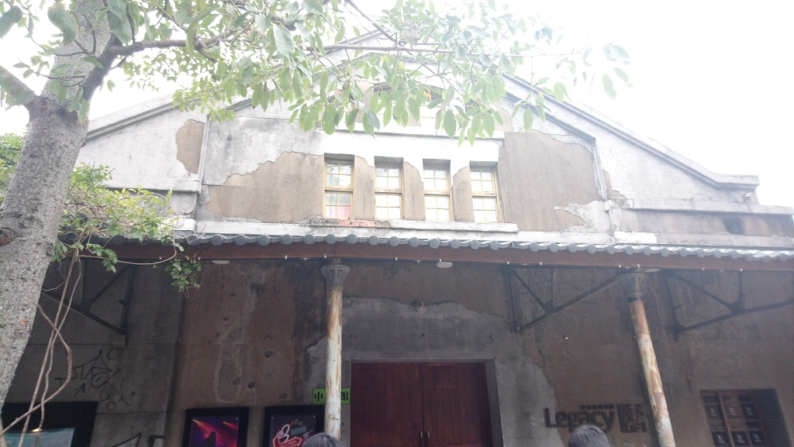

ASIA TOUR Vol.1「MOMOIRO CLOVER Z」
台灣武士Gary Hsu的雜記
這算是繼2016年美國單獨售票巡演活動後，官方第二次嘗試海外單獨售票巡演，也算是第一次亞洲的單獨售票巡演活動。雖然桃草在海外表演的次數也不算少，但多半是與日本政府企業推廣日本文化有關，或是聯合演出只占全活動一小部分。因此，這種從頭High到尾的桃草海外單獨演唱會，甚至售票與巡演限定周邊，對目前營運方式而言，是十分稀有的事情，尤其VIP福利好到連日本武士都來跨海搶票，可見魅力之大不容小覷。這次亞洲巡演只有兩站，其中之一就在【台灣．台北．永豐 Legacy Taipei】，根本就像是天上掉下來的禮物，而且就直接放在你面前，不去真的是太對不起自己了。
時間回推到2018年10月28日，正在日本自家舉辦巡演的桃草在【沖縄．浦添市てだこホール】宣布：2019年亞洲單獨售票巡演活動開跑，並將在【台北】【上海】開始售票。此時，台灣桃草FB社團可說是欣喜若狂，畢竟社團成立許久，終於盼到她們有機會來到台灣這天。雖然不再是六或五色，但是那四色，那四位依舊熟悉的成員，依然努力持續堅持到把【桃色幸運草Z】從日本扛到台灣。所以除了感謝，還是感謝。
接下來後續資訊逐漸明朗，台灣由【大鴻藝術】負責辦理售票工作，並於2018年11月24日全台開始販售門票。對於第一次去買演唱會門票的老人我來說，真的是十分新奇的一件事。當天正好是星期六（也是全台縣市長選舉投票日，但不是重點），老人我穿好衣服出門，期待提前個10分鐘左右去全家便利商店等待，感受一下是否真的會有【搶票】的情況發生。
一進便利商店門口，就看到有人在操作，此時心想：「算了！反正時間還沒到，等時間到妳還不走，我就…」同時默默打開我的手機，滑滑FB社團看貼文消磨一下時間，不過，貼文異常的不多，頂多幾個熱心團友提醒今天買票而已，想必大家都很緊張不想分心吧。此時，時間剩幾10秒鐘「幹！爽拉～販售機台沒人」直衝機器，並使用在網路介面練習多天的操作成果秒點，並確認手機整點時間一到，按下場次。「白的！？」此時我的腦袋感覺時間暫停了有3秒，還好我立刻回神，再次使用練習多天的手速重新點擊，這時畫面竟然有所回應：
「VIP已售完 VIP已售完 VIP已售完」
我的雙手已攤在左右，點下退出後回到便利商店一旁的座位區。沒錯，對於第一次買票的老人我來說打擊不小，甚至旁邊進便利商店的小孩笑聲都覺得格外刺耳。用著越來越低落心情打開手機回到FB社團取暖看看。「災難！是災難啊！」看來FB社團也有不少類似情況，雖然很可恥，但是感覺至少並不孤單「因為，這就是人生！難免有高低潮。」當時的我是這麼想的。接著直接買了張一般票，並向店員付了錢，說服著自己至少有票，並拖著疲憊的身心回家了。
當然，如果經常買賣演唱會票的讀者看到這裡，大概認為這人是傻子嗎？我現在回憶起來真心也覺得我那時候很蠢「沒辦法，新手上路」。回到主軸，後來回到家，吃完飯閒晃一下，突然想說很久沒上FB社團看看大家的戰果，誰知道這是另一個打擊的開始。
「什…什麼！還有這種操作」「斯巴拉西！！」原來，買演唱會門票會有清票機制，而且機器買到的憑證不一定要馬上付錢，可以擁有保留的權力。真的不經一事，不長一智，一天下來打擊次數太多，快變無敵了。不過也學到很多，感謝大家分享資訊，最後想想就算用一般票來寫下我桃草人生的回憶，我想也是很值得的。（所以後續也沒特別想辦理退票來重買的想法）
回想起來這網站也差不多在2018年底於FB社團公開，也算是慶祝桃草來台灣開演唱會的一個紀念而緊急開站吧！
時間來到2019年演唱會前幾天，隨著桃草演唱會即將來臨，FB社團跟著【大鴻藝術】釋出的資訊開始熱烈討論，除了物販外就是接送機的情報，尤其在接送機部分。之前桃草曾經去過【上海】做活動，【上海】的武士朋友在機場能近距離與成員面對面，這讓大家可能抱有一絲希望，因此接送機被視為是件非常大的事情。
「1月25日」是上班日，所以如何到機場的原因不細說，當天就與社團前輩們會合，一起等待著成員踏入松山機場大廳的一瞬間。因為第一次與社團成員面對面，現實中的我還是十分怕生，大概對個眼睛幾秒就往其他地方看，不然就手機消磨時間。不過，看到這麼多人來，心裡還是十分開心，很難想像前幾小時，還在告急人數不夠的情況。隨著現場其他團粉絲被請離場（畢竟他們被告知記錯時間了），大家的隊形才慢慢出來，心情也開始越來越緊張。望著松山機場的自動門開開關關，一會兒是成群的空姐，一會兒是扶老攜幼的一般乘客，十幾分鐘過去…
「咦！這種似曾相識的髮型，不就是【桃草Chan（ももクロChan）】定點攝影機常出現的長谷川護衛大哥嗎！？」這時，心有靈犀的夥伴們一同發出「哦哦哦！」的驚呼聲，不僅給還沒會意到的台日武士提醒，也引起現場媒體的注意。已經沒在注意時間過去了多久，大家眼神或鏡頭緊盯著松山機場自動門，我相信當時每個出來的乘客都會感受到這群武士的壓力，之後其實回想起來還蠻有趣的。
「真的來了」因為某些原因故意站後面一點，因此我注意到阿玲時前方就開始騷動，我只能開始找好空隙才能看到全員，根本忘記每個人進來的順序，不過，心裡已經十分開心了，尤其看到她們驚訝的表情。隨著武士呼喊著她們的名子，她們不停揮著手或是比出勝利的手勢「大家好！」「明天見！」這是她們要離開機場去搭車前，讓現場親耳聽到的中文問候，也可以算是來台灣前一、二句中文。接著，隨著一路的「謝謝！」慢慢走向外面，此時面對自動門的隊伍已經看不到她們身影，準備開始往外頭衝，希望佔一個能看到她們上車的好位子。而跑向外頭的同時，沿路後半部人群聽說基本是以日本武士為主力，不過也有可能包含一些台灣武士，一路可以聽到她們依然一直說著「謝謝！」並緩緩地向保母車方向移動。最後老人我遠遠的站個好位子，默默的看著成員依序揮著手進入車中後，準備以高速脫離現場回到現實的身份。
「1月26日！！這天終於來臨」昨天過於興奮，同時在FB社團看著大家分享著接機戰果，沒想到當天還算蠻早就醒來，反正時間是下午才開始，早上就開始慢慢看著FB社團，順便整理一下下午要參戰的服裝與門票。看氣象報導，今天可能會更冷，外套找一個厚一點的吧！因為老人我之前沒有參加過這種演唱會活動，隨著時間的逼近，心中還是有些忐忑。「乾脆就早一點看看，也順邊拍幾張照片作紀念」還好有這著想法，因為不知道這決定，卻讓我與另一位台灣武士賺到一個額外遇見成員的機會！
搭著車一路前往華山文化創意產業園區，亦是【台灣．台北．永豐 Legacy Taipei】所在地。「新手怎麼可能去過這種地方啊！」心裡邊想邊笨拙地拿著手機，開啟Google Map在那到處轉，轉來轉去好不容易找到目標建築物「大門，看起來好像在另外一側？反正沒差，沿著牆壁走一定會走到」畢竟跟機場一樣經驗，看到彩色服裝部隊就是我軍了。走著走著，沒想到我其實是從演唱會的後門轉過去，來到轉角心想「太棒了！是武士的顏色！」。不過，大家卻往我來的方向直直望著，也讓我感到有點莫名其妙。
「奇怪，怎一群人躲在轉角？而且位置又不是大門，人也不多，一堆黑人問號？」我先暫時無視他們，往真正的大門走去，走到大門後看到之前跟我在機場一起接機的台灣武士FB團友們正在坐著聊天，立刻走上前去用害羞且堅定眼神交流一下。「不過，還是有點在意，為啥有些武士在另一個地方集合？難道是迷路？」靠著大家都是武士的精神，毅然決然地拉了一個看似善於說話的台灣武士問起：「請問一下，你知道為什麼有些人會在另一邊集合？」，「另一邊集合？」善於說話的台灣武士回問，「對啊！就是在另一邊轉角，附近好像還有電梯的地方。」還好那位善於說話的台灣武士也很熱心，馬上往我說的地方去確認，當然，我也馬上跟了上前去。當我跟他一起到達轉角時，我看到他的臉色有點不一樣，同時聽到轉角的那些武士們好像有些躁動「是…是她們來了！」沒想到原來是成員也在同時抵達了【台灣．台北．永豐 Legacy Taipei】，正往後門進入準備彩排工作，此時我像著傻子一樣不停地揮手，另一個被我帶來善於說話的台灣武士也拿起手機拍照。「不好意思喔，現在不能拍照！」其實拍不拍都沒差，能額外再次看到成員真是超爽的，雖然過程不到1分鐘，她們就已經進入後門準備，超近距離爽赚一波感覺還不錯。接著我倆就開開心心回到剛剛的大門那，與善於說話的台灣武士一起和其他人分享剛剛的奇遇。「原來，剛剛轉角的那些人才是真正的老司機啊！」此時我的內心，也深深為轉角的那群人感到十分佩服。
雖然距離下午3點半的物販還有一段時間，就看著大家聊天，同時台灣與日本或其他各地的武士也越來越多，有些人的裝扮還很厲害，也有些人聽說是自己做的。【50嵐】珍珠奶茶因為昨天成員的PO文，導致現場成為一股風潮，當然【鼎泰豐】小籠包應該也是大家必定的目標之一。今天天氣十分寒冷，但人越來越多，大家的熱情讓心裡也跟著有一絲暖意。隨處看看，隨處照照，愜意地等待著下一件大事的發生。
這時大門被推開，原本以為與往常一樣，只是一般的工作人員進出，沒想到原來是還蠻常上鏡的桃草經紀人kwkm。當然，附近的人也因為有人大喊，全部都圍了過來看看他會想要說明什麼事情。大致上看來他想確認一下現場是否允許錄影，想透過手機直播傳送給日本的武士看看台灣這裡的熱情。之後他又進去拉出一個翻譯人員出來，透過中文確認一下台灣武士有多少已經在現場了（也有不少華人朋友幫忙助陣），也表達對現場武士們的感謝。因為【台灣．台北．永豐 Legacy Taipei】是由舊倉庫古蹟改建，隔音沒有很完美，基本成員彩排的音響聲明顯透露今日歌單，桃草經紀人kwkm也特別說明希望大家不要太在意。此外中間也有人提問「下次可以來大一點的場地嗎？」，桃草經紀人kwkm則回應：「也要大家一起努力讓更多人支持，機會就越來越大」。這回應官不官腔見仁見智，台灣認識的人比較少也是事實，最後大家用「Z」手勢結束了這次直播。再過十幾分鐘後，大門左右的物販攤位開始搬貨物進來，接下來我們將頂著寒風，為自己想買的紀念商品奮戰。
大家開始往面對大門右方靠，嘗試排出一個隊形來買東西。剛開始呈現歪扭的蛇形，感覺十分影響其他來華山文化創意產業園區的其他遊客，而且我軍的服裝又太顯眼了。好在最後還是有工作人員出來指導，大家規規矩矩的收斂成完美的貪食蛇隊伍。接著，每人手上發一張小小的購物單，方便快速結帳。同時前方又有好心人借筆過來，不然老人我沒經驗，想說看個演唱會還要帶筆？離真正開始物販還有一小段時間，滑滑手機，看著剛剛發的宣傳入會中文廣告單，這天氣真的冷到不行。這時隊伍開始緩緩地移動，等到有點疲倦就看著旁邊有街頭藝人的表演，今天站了一整天幾乎沒坐下，不時的跳一跳伸縮一下腿骨。隊伍中穿插著中文與日文的交談聲，雖然講中文的比例沒有日文多，不過，也有看到不少在台灣生活或工作的日本人來。提交了自己的購物單，付了錢，就排到另一邊有一個專門在教螢光棒操作的地方。首先配發三顆電池先裝進去，其實看著說明文件也不太好理解「老人我不熟這種時髦玩意兒！！」，後來經過服務人員指導，糾正我內蓋開啟的方向，放入電池開始了第二步，啟動！啟動長按很簡單，但特別的是雙按鈕操作順逆顏色變化的部分，不熟練怎麼可能轉換這麼快，而且「紅粉紫」三色比較一段時間才了解差異，算是蠻有趣的經驗，今天看來達成了不少「第一次」的成就。

大家買的也差不多了，也快到FB社團指定的活動時間，也就是「台灣與台日武士大合照」。跟著團友大大精心製作的手牌，大家認著手牌移動到旁邊大草地上，大草地上FB社團管理員準備好音響與麥克風，幫助炒熱現場氣氛，雖然播的大部分與桃草無關，但這幾天接觸覺得他還是一個蠻有趣的人，不時地自嘲或開嘲諷，但是還是很努力的開直播與搬器材來，帶點無厘頭的個性其實跟星塵系偶像還蠻像的（笑）。在等待其他人購買完後前來集合的同時，感覺其他遊客看到一群人圍著桃草布條聽High歌，服裝又這麼鮮豔，「是邪教！不然就是某種邪教…儀式」平常的我一定也是這麼想，但沒想到現在我也披著剛買的應援毛巾站在其中。日本武士的布條真的夭壽大，能帶來台灣也是非常辛苦吧！不過台灣這裡準備2個小幅的布條也不錯看，重點是大家聚在一起的感覺也是非常的棒，能在這麼美好的回憶與大家一同留下紀念，天氣你他媽可以再冷一點沒有關係！
從大草地退回來後，靜待工作人員入場指示，想說排隊是不是會從大門口開始排出另一條貪食蛇？會不會影響到物販或是其他遊客？「天真！我太天真了」另一個殘酷的考驗即將開始。隨著工作人員的指示，我們又回到剛剛的大草地，不同的是，這次他們沿著建築物拉出許多不同區塊的封鎖線，從VIP號碼一路拉到一般票，而我的票號是一般票1188，抵達時大約就是倒數第二區塊，這又讓我感受到前面說的清票機制的威力…，「算了！既來之，則安之」先在區塊隨意亂排，等人數差不多後工作人員開始拿一張號碼紙慢慢一個個排出行列隊伍。不過，這效率差到吐血，因為完全只靠一張紙沒有其他更多標誌，新進來找號碼的人不斷湧入，工作人員算位置每次都從頭開始點名（WTF…），尤其還有不少不懂中文的日本人導致大塞車，再加上冷酷的風在沒有掩蔽物的草地上狂吹。我覺得真得要有十足耐心與熱情，不然後面好像因為時間有點延遲入場，桃草營運都跑出來說話（後面的我們根本聽不清楚），老人我的雙腿已經漸漸感覺不是我自己的了。反正應該是延遲入場，等了許久的時間前方才感覺有再緩慢的移動，雖然已經有點疲累的跡象，但是我來的目的還沒達成，依舊懷著興奮的心情慢慢抵達大門的另一端。其實，進入會場後裡面還算溫暖許多，像逛大觀園般找了個位子鑽進去，「原來這就是看演唱會的氛圍啊！」看看四周感受一下，前方是主舞台，主舞台左右兩側上方有小螢幕，因為站的位子有點偏左，看到左側有一位攝影大哥「應該就是今天會直播的Uplive吧！」。接著聽到左邊有一對男女與日本大哥聊天，大概就是第一次來口號喊大聲一點，看是推哪位成員氣勢不能輸，幾個人在開演前練習，還蠻有趣的，而且日本大哥應該是在台工作過，所以中文聽與說還算不錯，這幾個人有趣的對話，也幫助我打發不少閒暇時間。場內不斷宣導禁止手機與攝影，也增加了我莫名的緊張感，感覺隨時就會開演一般，不停的左顧右盼。此時前方燈光好像有了變化，前方的群眾發出了驚嘆聲，並不停地往前移動「我在台北的桃草人生，終於要開演了！」。
（備註：此雜記事隔多天才動筆，請原諒老人我記憶力差，若有出入請多多見諒。）
M00. overture ～桃色幸運草Z登場！！～（overture ～ももいろクローバーZ参上！！～）
燈光配合著前奏響起拉開序幕，這首是桃草征戰多年的登場曲，配合著武士的應援聲量可以說是十分經典，應援過程中響徹整間【台灣．台北．永豐 Legacy Taipei】會場，連我一整天的腳酸就像被突然治癒一樣。隨著登場曲的尾聲，四道陌生又熟悉的身影竄入主舞台中間，緊接著台下武士興奮的歡呼聲，第一首表演即將呈獻。
M01. Z傳說 ～號角永不消逝～（Z伝説 ～ファンファーレは止まらない～）
雖然今日歌單大家都已知道（前面文章有提到【台灣．台北．永豐 Legacy Taipei】是由舊倉庫古蹟改建，隔音沒有很完美的問題），但是這也算是成員配合歌曲重新自我介紹給台下聽眾的High歌，同時這首曲子經過成員改編，再次宣示的意味濃厚。中間值得一提的是，有一段4人合體的動作，阿玲必須在最下面被隊長踩，而因為舞台高度關係基本她是整個消失不見的，還是真是難為她了。
M02. 『Z』的誓言（『Z』の誓い）
這首是之前【七龍珠Z】動畫劇場版【七龍珠Z 復活的「F」】主題曲，這首曲子除了是海外粉絲所喜愛知名作品的動漫曲外，原本就會帶一點點中國風的曲調，畢竟這次亞洲巡演的地點與中華文化有點關係，不意外會被選上。而編曲與編舞同10週年東京巨蛋時經過重新改編，與網路上之前舊的表演片段有很大不同，會有種耳目一新的感覺。中間「哈！哈！哈！」的應援聲，對老人我來說很難抓到點，看起來之後需要多多練習。
M03. 幸運草與鑽石（クローバーとダイヤモンド）
去年十週年紀念曲，前半段抒情緩和一下氣氛，可以靜靜看著自己喜歡的成員揮舞著手回應，後半段曲調突變，看著隊長把手放在耳朵的提示一起大喊著「ありがとう！」又拉回到歡樂的節奏到結束。聽完後回想：「不知剛剛的ありがとう，是我們勝過成員，還是成員勝過我們？」
中場MC
首先成員大喊「大家好！」對現場武士打招呼，接著熟悉的「私たちいま会えるアイドル，週末ヒロインももいろクローバー」「Z！！！！」開場，第一次跟著喊超爽的。成員迫不及待展現各種她們學到的中文「High不High！」「開心嗎？」「好高興來到台北」「ももクロ可愛嗎？」，其中詩織的「讓今天High到最高點」有點忘詞，後面有補救想回來，但是還是算醜一娛樂大家一次。隊長不意外也問了第一次來看演唱會的人數，害我不爭氣地舉起手來…。接著就是經典的自我介紹時間，大家跟著螢光棒設定的順序切換，真是神便利！不過我相信，如果連在歌曲中都能切換自如，只能說「娘子啊，跟牛魔王出來看上帝！」。這時燈光突然暗下來，大家「哦哦哦！」的喊叫，以為有什麼驚喜？結果應該是燈光師以為MC結束誤操作虛驚一場。因為有日本武士加持下，成員自我介紹時大家回應都念得很大聲很順，不過燈光師恢復光源後成員她們還是傻傻地問「台下日文都很好，是怎麼知道知道桃色幸運草Z？」，「YouTube！」「DVD！」「動漫！」大致上八九不離十，好題材動漫在台灣是很強勢沒錯，YouTube也是不錯的網路交流平台。不過，如果提個日劇至少提醒她們本身就是【星塵事務所】，應該回去多要點戲劇相關資源，畢竟很多團友也是因為日劇【悪夢ちゃん】主題曲【再會吧、那些愛憐的悲傷（サラバ、愛しき悲しみたちよ）】入坑的吧！最後玩了一下【『Z』的誓言（『Z』の誓い）】的龜派氣功後，隊長就順著動漫話題：「之後有不少動漫歌，希望大家好好期待。」而結束這次MC，開始下一段表演。
M04. CONTRADICTION
帶有速度感的切入，全場又陷入瘋狂空間，雖然是首老歌，但卻是深受許多武士喜愛的High歌。老人我在跟著大家的手平舉轉圈時有點不太靈光，好像在做復健一樣，還有「嘿嘿嘿！」時機點也是有點微妙啊，只能有機會多多練習。
M05. DNA狂詩曲
這首曲子也是FB社團不少團友推薦，能在台灣聽到也很值得了，不過忙著揮手其實不少歌沒有很仔細聽完，看人感覺比聽歌更專心，有時候不知不覺就結束了（笑）。另外，在開頭部分詩織沒唱好含糊帶過，連我日文程度不高的都聽得出來，當然台下都跟著笑出來。
M06. MOON PRIDE
另一個海外粉絲所喜愛的知名動漫【美少女戰士Crystal】第一、二期主題曲。不曉得會有美戰粉絲特地來買票聽嗎？因為是海外知名動漫作品，會很容易猜到有很高機率唱，不過感覺台灣美戰迷比較少在研究她們，所以只能說隨緣吧。中間有幾個跳起來的動作，不過很容易影響後面人的視線就放棄了。
中場MC
「開心嗎？」成員們依然一直嘗試用中文與台下互動，隊長中文一直卡詞，只記得「開心」到擠出超可愛的「Very開心！」「Very Very開心！」。接下來的話題主要與食物有關，「珍珠奶茶」「小籠包」日本人來台必備，「齁呷！齁呷！」成員的回應真是滿分，感謝教她們這句的人。「好吃」「好喝」她們也有學，不過私心覺得「齁呷！齁呷！」才是王道，她們也十分喜歡這句。她們特別提到有一種像桃子的饅頭點心，並問台下知不知道中文名稱是什麼，「壽桃」應該就是87%像的答案。中間又回到中文展現橋段，歪著頭問「你們愛桃草嗎？」，「愛！！」台下開始陷入瘋狂，蕾妮醬繼續攻勢「高城好可愛嗎？」，台上與台下一陣嬉鬧，最後演變成蕾妮醬天真的把「齁呷！齁呷！」套用到「可愛」中文，結果變成「高城齁呷！齁呷！」笑歪台灣武士馬上制止回去，詩織趁勢也冷回「高城不可愛！」，蕾妮醬緊張的直說「NO！NO！」，再次笑翻全場。其實隔天台灣媒體【中國時報】甚至利用這段搞笑錯誤把高城蕾妮名子放大到比桃色幸運草Z標題還大又明顯。後續情報發現：蕾妮醬在上海也看到了這張報紙，該不會拿回家當傳家寶吧！接著同樣也被媒體報導的阿玲可以10分鐘幹掉一杯珍珠奶茶話題，喝不夠還連隊長的一起喝，辯稱喝珍珠奶茶都是在拚速度的「Fast Drink！」，只能說年輕真好啊！然後蕾妮醬冷不防問一句「呷霸沒？」，大家剛開始還以為只是一般台灣問候就回應回去，沒想到還真正又被反問回去「吃什麼？」，台下一陣慌亂丟出一個神來一筆的「雞排」，並且再改用「超大炸雞」的形容方式成功把阿玲釣好釣滿，有些人比得太誇張，讓成員冒出不少懷疑的眼神。同時問到「夜市」可以買，成員也透露出有去夜市玩耍，而「臭豆腐」原來她們知道但不敢嘗試，台下馬上「齁呷！齁呷！」反擊引起她們興趣（笑）。但是阿玲到最後一直很努力想記下「雞排」的中文發音，反覆要求台下再念一次，這食物發音外國人不好發，對台灣人來說可能誤認聽到髒話，同時對日本人來說變成聯想到隊長的平胸（來自阿玲的惡意日文～）。最後也問了「揮螢光棒」中文，提醒大家記得揮舞，並希望「揮螢光棒together！」，沒意外【奔馳吧！（走れ！）】這首神曲就要出現了。
M07. 奔馳吧！（走れ！）
桃草在各會場唱這首神曲時必定一有個全場關燈環節，台上與台下的「螢光棒海」經典橋段，沒想到就出現在老人我眼前。現實揮起來十分感動也十分短暫，還沒欣賞夠就開燈了，希望網路能有存檔讓我再重溫一次當時的時光，果然是神曲一首。
M08. 日本笑顏百景（ニッポン笑顔百景）
這首前奏太熟悉了，動畫【女子落語】片尾曲。就當時來說算是【洗腦神曲】之一，有種邊看著表演與邊聽歌的享受。「但是，裝備不足啊！」眼看著前方武士切換扇子模式，希望下次有機會來台灣，建議物販能出一個小扇子玩玩。
M09. 猛烈宇宙交響曲．第七樂章「無限的愛」（猛烈宇宙交響曲．第七楽章「無限の愛」）
「燃炸天啊！」亦是動畫【猛烈宇宙海賊】主題曲，繼續猛烈的攻勢，大家熱情也沸騰起來，回想起來不知外面是否聽到如此激烈的橋段，這種音漏會不會嚇到其他人。其實事後也聽到台灣武士【（閃靈）林昶佐】有來致意，難道不來個【鉄色クローンX】合體一下？最後結尾的詩織記錯舞步蹲下去又尷尬的站起來，再次娛樂全場。
M10. 更加堅強（ツヨクツヨク）
「揮毛巾是吧，還好我有買，歐耶！」其實這首曲子除了大家熟知翻唱自團體【mihimaru GT】的知名歌曲外，也是算是動畫【玻璃艦隊】的主題曲，所以動漫曲再加一。大概礙於空間的關係，大家甩毛巾的甩幅不敢太大，也不敢丟太高，不過跟揮舞螢光棒的感受不同，對老人我來說也十分新奇有趣。
中場MC
結束後馬上想了解台下對於動漫曲【猛烈宇宙交響曲．第七樂章「無限的愛」（猛烈宇宙交響曲．第七楽章「無限の愛」）】現場版的感想為何，同時也宣布「現場同時直播收看有21萬人」，讓成員與武士們都嚇一跳，因為桃草與我們原本都以為是累計。不管真偽如何，振奮心情的她們開始到處輪流問「後面的人High不High！」「中間的人High不High！」「中間後面的人High不High！」…等等，就是打死不問前面VIP進場的幸運兒，甚至開嘲諷「就是不問」「前面就算了」「除了前面的人High不High！」。當然到最後怎麼可能不問，前面High完後全體再High一次，準備進入下一個階段。另外，隊長在被成員問「夏菜子High不High」遊戲時，隊長自己一人學台下舉手秒反應大喊「YA！！」也很可愛。
M11. 灰燼與鑽石（灰とダイヤモンド）
這首是今天最令我吃驚的一首，本身很吃唱功，而且又能在現場體驗，大家都安安靜靜的屏息聆聽，尤其等到阿玲繼承那段高音的詮釋，決定這首歌的成敗。「對！不是隊長，而是阿玲那部分。」真的沒想過聽一首歌也能聽的如此緊張，而這首歌阿玲那段高音我給很好的評價，我不確定從直播聽出來的結果，但是現場親耳聽到的我認為已經算很能接受，表現不錯令人驚艷。「如果沒有唱上去，我會怎麼想？」說真的我也不知道，反正心中的小惡魔的疑問，已隨大天使的驚豔歌聲灰飛煙滅了。
M12. 出動！怪盜少女（行くぜっ！怪盗少女）
神曲中的神曲，桃草代表曲之一。可能對許多人來說這首表演太多次了，不過桃草武士很吃這套，尤其在海外表演留個紀念也不錯，這種耗體力的表演，能看一次就爽賺一次。基本能揮就跟著揮舞，以前看影片看過太多次，來到現場竟能揮個七、八分像。中間的翻滾等新編舞還算不錯，唯獨「反蝦跳躍」「對！我說的就是你，反蝦跳躍！」不知是舞台距離太遠，還是服裝的關係，看不太清楚跳起來的高度就結束了！？就像一陣風一樣有點錯愕，「哭啊！」大概還要再回顧一下存檔影片才能彌補。不過，中間還是很歡樂的跟著應援到結束。
退場（安可）
接著是退場感謝，台下的人雖然知道還有安可曲，不過難掩意猶未盡的情緒，畢竟也說明接下來是整天表演的尾聲，大家等著台上成員喊「我愛你」退場後，「安可」吼叫聲不絕於耳。一段時間後，還在聽旁邊的人討論會不會換衣服時，沒想到成員蠻快又回到舞台前（當然還是同一套），接下來的每分每秒可說是無比的珍貴。
En1. 笑一笑
想說怎麼沒有這一首，安可曲第一首馬上登場，也是去年【蠟筆小新】動畫劇場版【蠟筆小新：功夫小子 ～拉麵大亂鬥～】主題曲，同時是與中華文化的功夫有關，所以也是不意外的曲目。這首算是比較新的作品，所以大概都在學習比勝利手勢的時間點，但比不起來還是直接揮螢光棒就好。因為是安可曲，會有接近尾聲的情緒，所以依然看人感覺比聽歌更專心。
En2. 朝向那片天際（あの空へ向かって）
這首旋律下去不得了，馬上感覺就是最後一首，除了拍手外，趕緊把握時間多看兩眼。這首也算是留給老粉不少回憶，畢竟算是比【出動！怪盜少女（行くぜっ！怪盗少女）】更早期的歌曲，最後日文大喊「世界のももクロ NO.1」口號聽說惹哭不少台灣武士，也喊到都快貫穿【台灣．台北．永豐 Legacy Taipei】，想想看有些老粉絲等了多少年頭，終於在自己家鄉大聲喊出對著她們宣示的口號。期待這份心意能同時帶領她們與武士更加強大，真的是首不捨得結束的安可曲。
終場
成員用「開心嗎？」「好開心！」道謝剛剛大家努力的安可應援，「有機會再來」也讓台下武士十分感動，成員也特別感謝第一次來台灣能在【台灣．台北．永豐 Legacy Taipei】聚集這麼多人潮，她們一開始其實還蠻擔心的（星塵偶像海外經營真心不強）。私底下雖然日本武士還是算大宗，但是這次靠著各地華人集結，同時台灣武士也是盡量動員出來，如果目標放大一點，是遠遠不足的，可能連其他日團7、8分之1都不到，這都是營運與華語朋友未來多多努力的空間。此外，她們也期待多點海外演出機會，如同阿玲提醒讓Vol.1數字增加的可能性。「靠！一定要再來啊！！」這次台北場老人我拚死都到現場了，就是希望能多給她們海外演出的信心，我想其他台灣武士也是這麼想的。「私たちいま会えるアイドル，週末ヒロインももいろクローバー」「Z！！！！」的道別應該是老人我自己整場下來最大聲的一次，畢竟我還是屬於害羞類型的人，但這個「Z！！！！」對老人我來說不是今天表演的結束，感覺比較像她們剛剛海外感言的回應「謝謝妳們來，請再次來到台灣玩！」。最後成員「我愛你們」「我愛台北」與蕾妮醬飛吻退場，結束今天這一場難忘的演唱會。
一般票的表演結束，後面就是VIP的福利時間，這時後方一般票的我們一一散場離去。日本武士怎麼想我不清楚，但是我想有來現場的台灣武士應該會十分滿足，畢竟第一場來台單獨售票演唱會，一整天滿滿的桃草元素，還算蠻值得的。要怪就是天氣太冷，還有主辦單位排隊進場那段不夠好，腳麻的部分算是有點吃力，不過也怪自己太興奮，應該留點時間找個位子坐下來休息一下。另外，物販的USB周邊商品雖然也遇到黏太死情況，不過工作人員在現場可以馬上幫你測試與換到好的新品，這點值得肯定一下。有了這次經驗，期待下次桃草能再來台灣，場地大小其實沒有區別，甚至小場地福利可能更好。但是，說真的，如果台灣也能有更多人一起來玩，大場地也是可以接受的，畢竟這也是營運與武士們共同的目標。尤其，不像常遠征日本的大大們，只要桃草能來台灣，老人我一定會想辦法出席，因為這種事根本就像是天上掉下來的禮物，而且就直接放在你面前，不去真的是太對不起自己了。
最後，這只是一篇大叔新手初體驗桃草演唱會的雜記，可能對大部分前輩或老粉絲沒什麼作用，但是如果看到部分值得借鏡與學習的，就別跟我一樣犯蠢，會少走許多冤枉路，武士們下次見啦。